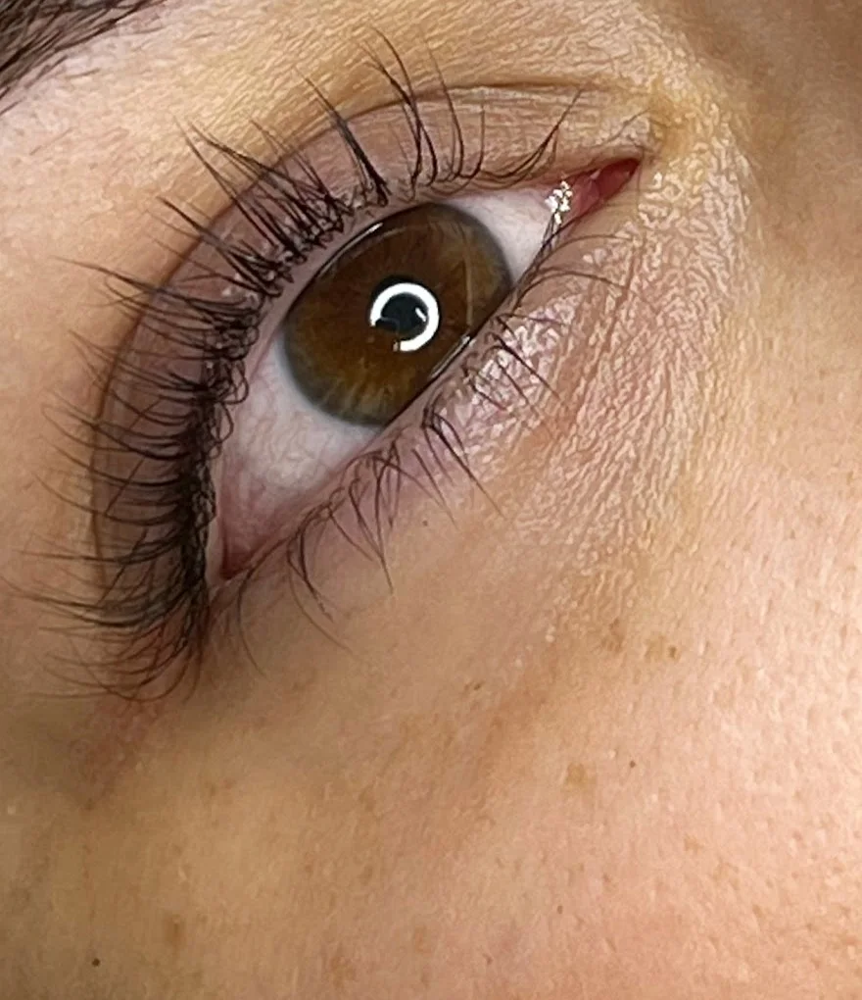
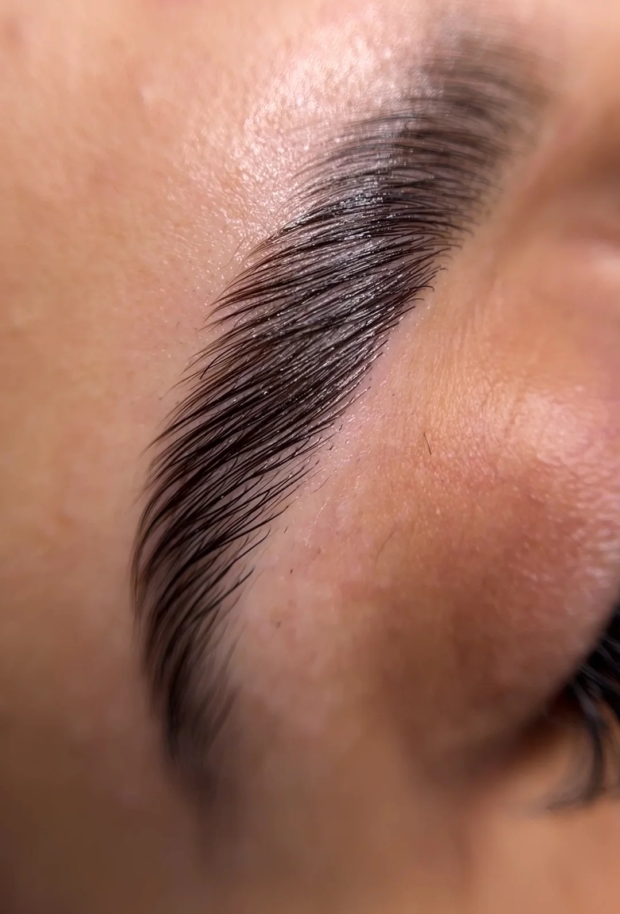
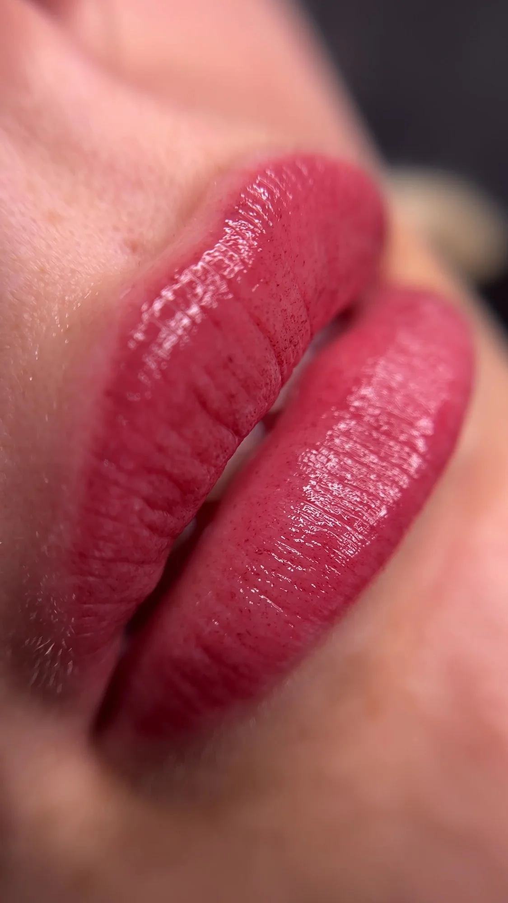
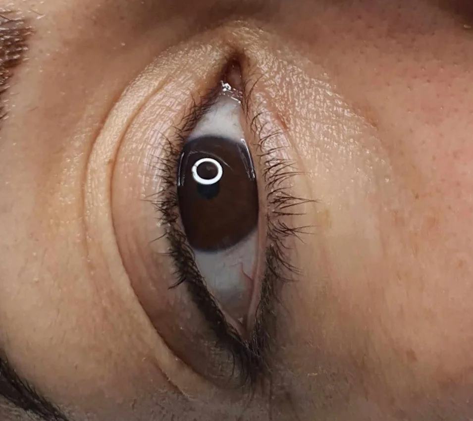
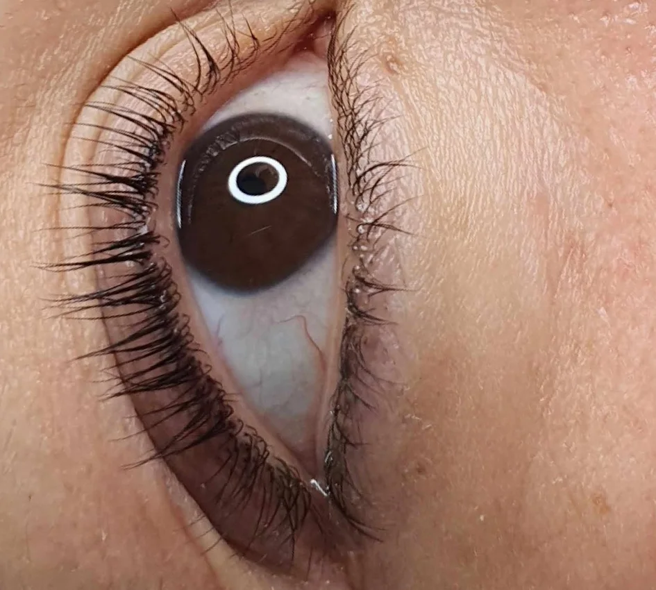
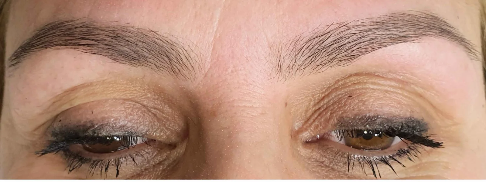
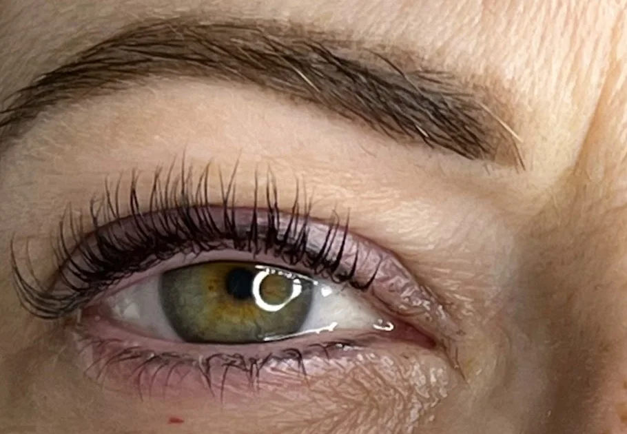
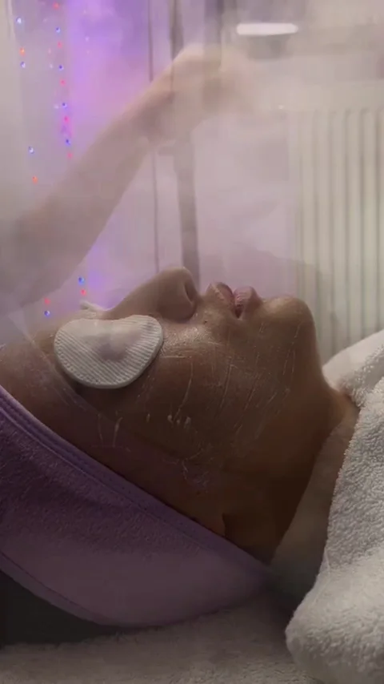
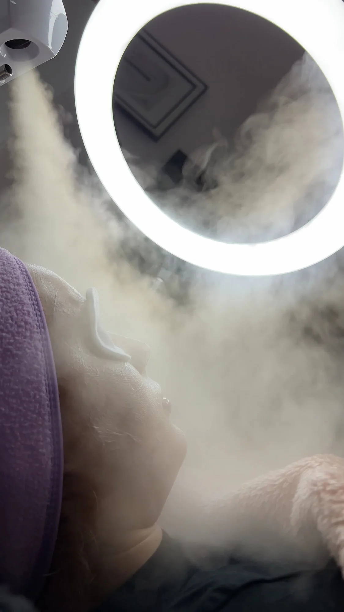

Lashlift
Brows
LipblushGeen extensions. Je eigen wimpers.
Korean lashlift, powderbrows en lipblush bij Imren in Vilvoorde. Enkel voor vrouwen en altijd op afspraak.
Zelfde wimpers, andere blik.
Ik zet geen extensions. Ik werk met de wimpers die je al hebt en til ze op van aan de wortel, zodat je ogen meteen opener staan.
Geen lijm, geen nepwimpers die uitvallen. Gewoon jij, maar wakkerder.
- Korean lashlift eigen wimpers
- Enkel voor vrouwen rustig, één op één
- Op afspraak via WhatsApp of Instagram


Van wimper tot lip.
Alles wat het verschil maakt rond je ogen en je mond, en een facial als je huid even aandacht nodig heeft.
Lipblush
Een zachte kleur op je lippen die er 's ochtends al staat. Precies de tint die bij jou past.
Vraag naar lipblush
02Powderbrows en browlift
Volle, mooi gevormde wenkbrauwen. Geen gedoe meer met potlood.

03Korean lashlift
Je eigen wimpers, gekruld.

04Facials
Reinigen, stoom en een masker.
Rustig, en stap voor stap.
Stuur een berichtje
Via WhatsApp of Instagram. Zeg wat je wil laten doen, dan zoeken we samen een moment.
Je komt langs in Vilvoorde
In de studio aan de Perksestraat. Enkel vrouwen, dus je zit er helemaal op je gemak.
Ik leg alles uit
Wat ik doe, hoe het voelt en hoe je er nadien voor zorgt. Je gaat naar huis zonder vragen.

Ondanks de slechte ervaringen die ik in het verleden had door microblading bij iemand anders, heeft ze me onmiddellijk gerust gesteld en heb ik er amper iets van gevoeld.
Ontzettend tevreden met mijn nieuwe wenkbrauwen! Ze zijn precies zoals ik had gehoopt: natuurlijk, vol en perfect in vorm.
Mijn wimpers zijn super mooi gekruld, de producten pikten niet en mijn ogen waren ook niet geïrriteerd nadien.
Ze legt ook elke stap uit, wat heel belangrijk is. Ik raad haar zeker aan. Dit wordt mijn vast adres voor mijn wimpers en wenkbrauwen!
Stuur Imren een berichtje.
Laat weten wat je wil laten doen en wanneer het je past. Imren antwoordt zelf en zoekt een moment dat voor jou werkt.
- Adres
- UrenMaandag tot zaterdag, 9u tot 17u
Zondag gesloten
Altijd op afspraak - Voor wieEnkel voor vrouwen